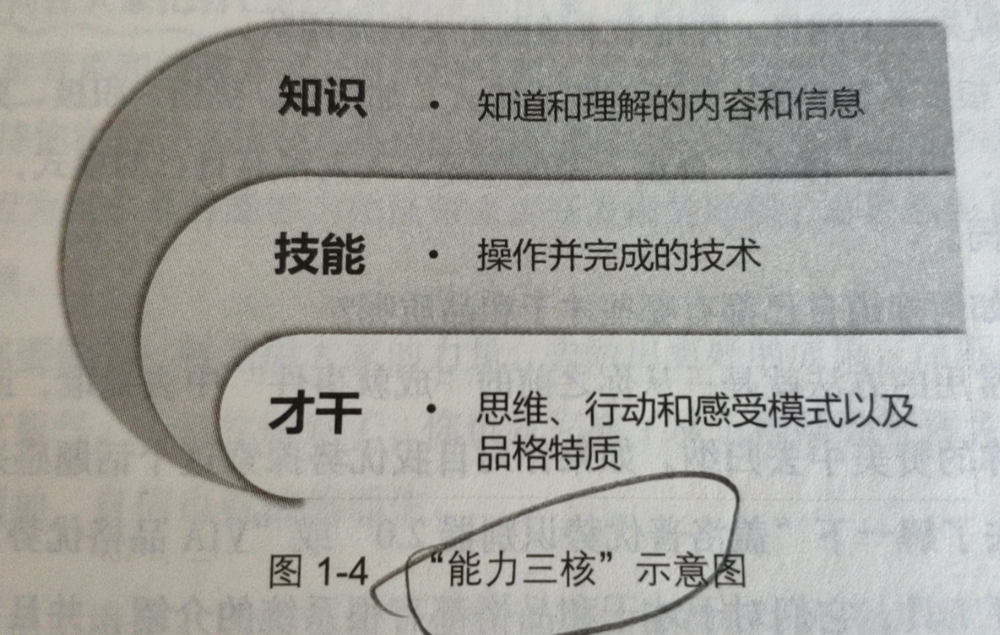

即便不做技术管理者，要做好一位技术带头人或架构师，工作视角也要做如下的升级：
- 从目标出发去看待技术
- 从评估的角度去看待技术
- 从依靠自己的技术到借助大家的技术
从技术实现者到技术应用者，具体发生了哪些转变呢？
- 对于技术实现者来说，程序设计能力、编码实现能力、技术攻坚能力和技术评估能力，都是需要具备的，主要关心的是“怎么把事情做出来”，属于“how”的范畴
- 对于技术应用者来说，技术评估能力变得做尤其重要，因为技术管理者主要关心的是“要不要做这件事”以及“这是件什么事儿”，属于“why”和“what”的范畴，是要在综合评估之后，做出决策和判断的
技术评估的维度主要体现在以下三个方面：
- 技术项目结果评估
- 1）这究竟是件什么事情？
- 2）希望得到什么结果？
- 3）要从哪几个维度去衡量结果？从哪几个技术指标去验收成果？
- 技术可行性评估
- 1.可行性两层含义
- 1）“能不能做”5，是指有没有能力做到。这是个能力问题
- 2）“值不值得”， 是指能力允许，但是否有足够的收益值得做。这是个选择问题
- 3）不懂技术的管理者一般问的都是“能不能做”，而有经验的技术管理者和资深工程师，考虑的是“值不值得”
- 2.通常的技术项目，都有哪些技术成本要考虑呢？
- 1）投入的资源成本
- 2）技术维护的成本：技术选项成本、技术升级成本、问题排查成本、代码维护成本
- 3）机会成本
- 4）协作成本
- 技术风险评估
- 1）建立技术学习机制
- 2）专项技术调研项目化
- 3）和技术专家交流
- 4）听取工作汇报
担心自己不是“团队里技术最强的那个人”：
- 1）管理者的“技术最强”不体现在技术的专业精深和编码熟练度上，而是体现在能否带着团队高效地交付出高质量的产品和服务上。具体来说就是对三个评估维度的判断力：结果评估、可行性评估和风险评估
- 2）管理者不能依靠专业上的“技术最强”来让员工服气
- 3）技术强只是让员工服气的方式之一，即不是唯一。想让员工服气，其实就是管理者对员工有良好的影响力。带着员工取得好业绩，获得良好的回报，以及支持和帮助员工成长
领导力的高低取决于“带团队成事”的能力，而并非由风格决定
管理者的团队的协作关系大体可以分为四类：
- 1）发号施令型：管理者发号施令，全程指挥，但不会亲力亲为去操作，团队成员只要按管理者说的做好执行，不需要问为什么
- 2）以身作则型：管理者凡事冲在最前面，是那个站在马匹中间，和大家一起奋力拉车的人
- 3）激发辅导型：不会亲力亲为去帮员工做事，但是会去辅导和启发员工怎么去完成工作，并且提供鼓励、支持和反馈
- 4）无为而治型：“没有我的时候，团队完全能自行运转”，完全授权了团队成员，只是在约定的时间去检查结果是否达成
不同风格在不同场景下的适用度：
- 1）当一项工作不容有闪失，而你又是唯一熟悉且最有掌控力的人时，一个命令式的你更能降低风险、达成目标。所以，命令式管理适用于需要强执行的场景
- 2）当一个团队特别需要凝聚力和斗志去努力攻坚的时候，一个支持式的你会促成很好的效果。支持式管理特别能带动团队士气和凝聚力，在提升大学的热情和积极性方面很有优势
- 3）当有一些核心人才需要重点培养，团队需要发展梯队的时候，一个教练式的你会带来明显的效果。不但能把事情做好，团队成员也能得到快速成长。虽然执行速度通常不快，但是不会偏离方向
- 4）当团队梯队很成熟，团队成员需要发挥空间的时候，一个授权式的你能提供最恰当的管理方式。因为成熟的下级最需要的不是你的帮助，而是你的放权
“能力三核”：

如何面对团队里的老资格员工和高能力员工：你要做的，不是和团队竞争、比较，也不是比团队每个人都强，而是要考虑如何让大家把自己的才智都发挥出来，去达成一个共同的团队目标。总之，你要做的不是管束和控制大家，而是引导和支持大家
“你也许不是最强的那个人，但是你得知道，你是此时此刻做这事儿最合适的人”
既然你被任命为这个团队的负责人，你就是当前带领这个团队前行的最合适的人。还有什么比这个更能让你“嘚瑟”的呢
领导力就是动员大家为了共同的愿景努力奋斗的艺术。“动员大家”“共同愿景”和”努力奋斗“，分别对应了管理3.0中的”带人“”目标“和”做事“这三个要素
”管理三明治“

团队建设六要素：
1个目标 | 3个视角 | 6个要素 |
团队建设：战斗力 | 个体：动力 | 员工实力：能力培养 |
使用实力的意愿 ：员工激励 | ||
个体间：凝聚力 | 排兵布阵：团队分工 | |
步调节奏：协作默契 | ||
团队：耐力 | 新老强弱：梯队建设 | |
归属认同：团队文化 |
任务管理三要素
任务管理 | 阶段 | 主要工作 |
目标落地 | 事前：做什么 | 排优先级：轻重缓急 |
事中：怎么做 | 执行落地：有效执行 | |
事后：怎么做更好 | 自动驾驶：流程机制 |
管理沟通涉及的方方面面
维度 | 描述 |
沟通场景 | 向上沟通、向下沟通、横向沟通... |
沟通目的 | 建立关系、同步信息、表达情感、说服影响... |
沟通内容 | 计划、进展、风险、协同、人员... |
沟通方式 | 当面、电话、消息、电子邮件、协作平台... |
沟通工具 | 3F倾听、积极主动式反馈、回放确认... |
沟通意识 | 主动通报、换位思考、闭环意识、结论优化... |
管理全景图

从一个个人贡献者（Individual Contributor, IC）到团队领导（leader），要进行怎样的角色转换？
- 1.工作职责
- 1）工程师，完成好上级安排给你的工作就诸事大吉，至少是无咎的
- 2）管理者，要做的是带领整个团队往前走，上级只是帮你设定一个目标，剩下做什么、怎么做，都是你要考虑的问题
- 2.负责对象
- 1）工程师，“管好自己就可以了”，所以主要是对自己和自己的工作负责
- 2）管理者，要充分认识到，你的团队是上线和公司给你的资源，你需要对上级负责，还得关心团队成员的发展和成长，对下级负责
- 3.关注焦点
- 1）工程师，一般是过程导向 的，因为他们需要一步一步地把工作执行到位，眼睛盯着的常常是“脚下的路”
- 2）管理者是目标和结果导向的，你需要时时关心目标和前进方向，关心“远方的目标”，因为你得不断回答下一个问题：“我要带着团队去往何方”
- 4.能力要求
- 1）工程师属于个人贡献者，是靠个人专业能力来产生业绩的，工作内容以发挥专业能力为主，相对比较单一
- 2）管理者属于团队贡献者，要做成一项工作，除了技术判断力，还需要目标管理能力、团队规划能力、项目管理能力、沟通协调能力、团队建设能力等等，需要看方向的、带人的、做事的多维和复杂的能力
- 5.任务来源
- 1）工程师的工作主要是上级安排，听上级指挥
- 2）管理者的工作虽然也有上级工作的拆解和安排，但更多地是靠自己筹划，然后和上级去沟通确认，从被动“等活儿”变为主动规划
- 6.实施手段
- 1）工程师大部分工作是要亲力亲为的，主要靠自己完成
- 2）管理者，工作清单涵盖了整个团队的工作，靠自己一个人是无论如何都做不完的，因此主要是依靠团队来完成
- 7.合作维度
- 1）工程师合作的内容就是和平级的伙伴共同做好†挪，因此以平级合作为主
- 2）管理者，合作的内容包括上下级或平级，维度多样化
- 8.团队成员的合作关系
- 1）工程师和大家都是平等竞合关系，以合作为主，也有“竞”的成分
- 2）管理者和大家形成全面合作的关系，没有“竞”的因素
- 9.思维方式
- 1）工程师大部分工作内容和工作要求都是执行，关注过程和细节，更重要的是关注风险和成本，希望通过对风险的排队和成本的掌控，来保证工作交付的确定性，形成突出的“确定性思维”，特点是眼里都是风险和问题
- 2）管理者，虽然也会考虑风险和成本，但是更习惯关注做一件事能带来的可能性收益，并以此来判断是否值得投入资源去做，称为“可能性思维”
- 10.技术视角
- 1）工程师，技术是用来做事情的，掌握好技术的目的就是为了做好实施，他们从如何应用和实施的角度看待技术
- 2）管理者，技术是达成目标的手段之一，所以他们从如何证券从业人员 的角度看待技术，评估该项技术是否是最合理的手段，以及如何选择才合理，并据此做出决策，因此常常被称为技术判断力
描述自己团队的职责：
- 1）公司为什么要设置这个团队，对这个团队的期待是什么？
- 2）这个团队如果要持续存在下去，其独特的价值是什么？
- 3）你用什么维度来衡量团队价值的高低？
- 4）你可以用很简洁的语言来陈述它吗？
- 5）你团队的成员，也都能准确无误地说出来吗？
团队职能两个层次，即基本的职责和升华的使命：
- 1）职责，是团队职能的下限。也就是说，至少要把工作“完成”，如果这些“基本职责”都搞不定，意味着连团队的基本价值都不能体现
- 2）使命，是团队职能的上限。也就是说，如果我们团队做得好，能承担更大的职责，就能体现出更大的价值
- 3）基本职责解决的是“团队生存”问题，而使命解决的是“团队实现”的问题
设定团队职责和使命：
- 1.收集信息
- 1）向上沟通。听听上级对团队的期待和要求，以及希望用什么维度来衡量你做得好还是不好
- 2）向下沟通。主要是和大家探讨对国际化业务的看法和理解，以及对未来发展的期待
- 3）左看右看。主要是看职能定位的边界在哪里，最好和兄弟 团队的职能是无缝对接的
- 4）你的理解。你对业务的理解，你对领域的理解，你对团队的期待，以及你对自己的期待
- 2.提炼和升华
- 1）职责的提炼。基于上级的期待和要求，以及你对业务核心价值的理解。对职责进行简短化提炼，并尽可能长时间稳定下来
- 2）使命的升华。基于基本职责，寻找团队对于部门和公司的独特价值，并和行业发展趋势结合，设定自己的期待
- 3）确定衡量维度。主要是为了告诉上级和团队，我们将从哪些角度去评价我们做得好还是不好
- 3.确认和主张，团队管理者不仅要明确团队职能，还应该主动向外宣贯
- 1）和上级确认，得到上级的支持和认可
- 2）向平级、下级主张
目标设定的SMART
- A可达性，一个有挑战性且努力能达到的目标
- S明确性，M可衡量性，把目标设定到可以衡量的程度
- R相关性，工作内容必定是和上下游及上级目标相关联的
- T时限性，所有的目标都是基于一定时限的，没有时间限制的目标没有意义
目标尽可能少。因为，一旦目标设置过多，就违背了目标的初衷——优化资源配置。目标过多必须导致资源分散，很难达到优化配置的效果。不超过3个是最好的，视情况，5个以内也可以，超过5个就显得多了
考虑三个维度的目标：
- 1）业务目标，接下来团队从业绩角度要达成什么目标
- 2）团建目标，接下来团队从团建角度要达成什么目标
- 3）专业目标，接下来团队从专业能力角度要达成什么目标
目标的描述形式：
- 1）可以量化的指标，就是大家常说的KPI
- 2）不可量化的目标，用关键结果来衡量，就是KRA（Key Result Areas）或者OKR（Objectives & Key Results），总之，就是对”KR“（关键结果）的一种描述
专业目标设定的关键步骤只有两步：
- 1.选择你要提升的关键维度，常见的来源有：
- 最能体现团队核心职能的技术维度
- 重大的技术攻坚方向或技术债务偿还
- 新技术储备
- 2.设定目标，可以是量化的KPI，也可以是非量化的KRA。就好像每个人都有自己的价值观一样，每个团队也都有自己最核心的评价维度，这是由团队职能决定的：
- 服务端团队的稳定性和性能
- 数据团队的准确性和安全性
- 功能迭代团队的高效和质量
衡量团建目标：
- 1）团队的规模
- 2）团队的分工
- 3）团队的梯队
做人力预算的时候，最好给出十分充分的理由：为什么你需要这些人，为什么是这么多人，以及你的依据和估算逻辑是什么
如何估算团队消化能力？
- 1）看看你团队都谁能带人，分别带几个比较合理
- 2）看看你团队的新人培养机制是否成熟健全
对于任何一项工作，评估其结果的关键指标到底是进度、质量还是效果，决定着我们以什么方式投入什么类型的资源。也就是说，只有我们清楚了最关注的指标，才能让资源的投入得到最大化的发挥
团队建设六要素：
1个目标 | 3个视角 | 6个要素 |
团队建设：战斗力 | 个体：动力 | 员工实力：能力培养 |
使用实力的意愿 ：员工激励 | ||
个体间：凝聚力 | 排兵布阵：团队分工 | |
步调节奏：协作水平 | ||
团队：耐力 | 新老强弱：梯队建设 | |
归属认同：团队文化 |
专业能力一般可以用广度和深度来衡量：
- 广度：代表着能搞定多大规模的事情，常见的说法是技术整合或技术集成能力
- 深度：代表着能搞定多复杂的事情，常见的说法是技术攻坚能力
成熟的经理会更关注梯队的培养，在员工培养中对通用能力的要求会显著提高
提升个人能力7-2-1法则：70%靠实践，20%相互交流讨论，10%靠听课和看书自学
常见的学习方法及具体实施策略
学习方法类别 | 具体实施策略 |
帮助员工自学 |
|
相互交流讨论 |
|
工作实践 |
|
有名义上的导师，比没有指明导师要好很多，所谓”找谁都行“，意味着没有人对此负责。所以，请为你的团队成员找一位导师
为自己的团队制定一个成长的”技能图“，并标记出重要等级。这样，团队成员就有了学习和成长的方向，知道该往哪里使劲了
员工能力培养两个信念：
- 1）相信员工能力的差异性。也就是看到差异，重视丰富性
- 2）相信团队能力的系统性。也就是欣赏差异，重视互补性
人对外部刺激的应对机制是增强免疫力，因为人对于外部环境总是倾向于”适应“的。所以无论是用惩罚来”威逼“，还是用奖励来”利诱“，用多了就没效果了
下面两种情况下，奖惩作为外部激励手段，负面影响会有效降低，而下面效果会大大提升：
- 1）外部奖励是员工预想不到的，对于他们来说是”出其不意“的
- 2）外部奖励只有在工作完成后才给出
非特质激励手段如表扬和正向反馈，其外部激励的负面危害较低，满足下面三个原则的基础上，可以多加运用：
- 1）具体原则
- 2）公开原则
- 3）及时原则
内驱力也叫自驱力，指：
- 1）主导自己的人生，即”自主“
- 2）延展自己的能力，即”专精“
- 3）让生活更有意义，即”目的“
怎么激发员工的自驱力：
- 1）提升员工工作的自主性。也就是，给员工一定程度的自主掌控感。
- 首先是工作时间和地点上的自由度
- 其次是工作内容上的自由度
- 最后是工作方法上的自由度
- 2）提升员工专精度，让员工持续成长。”专精“强调的不是要设定目标去成为某个”专家“，而是强调”自主投入“的过程，为员工创造愿意自主投入的条件，因为只有自主投入才能带来专精，需要创造哪些条件呢？
- 明确的工作目标
- 目标要略有挑战性
- 要能发挥其优势
- 3）提升工作的意义感和使命感
驱动力发展三阶段
驱动力 | 驱动力2.0 | 驱动力3.0 | |
时期 | 200年之前的大部分时期 | 近200年最为明显 | 正在发生 |
需求 | 生理需要（本能） | 外部驱动——奖惩（服从） | 内部驱动——自驱力（投入） |
策略 | 满足生存和安全需要 |
|
|
全面可持续幸福（well-being），也叫盛放（flourish），包括：正面情绪（positive emotion）、人际关系（relationships）、投入（engagement）、成就（accomplishment）、人生意义（meaning & purpose）
如果只用一句话来回答如何实现个体间的良好协作的话，那就是——有默契的时候靠默契，没默契的时候靠机制
工作授权三段法
阶段 | 要点 | 示例1（被动授权） | 示例2（主动授权） |
事前 | 1.审视初衷 | ”做项目人手不够“ | ”某人需要锻炼和学习“ |
2.明确期待 | ”这个项目最核心的是进度“ | ”把这个业务以及相关的人熟悉起来“ | |
3.听其思路 | ”你觉得从哪些方面入手“ | ”你打算怎么做“ | |
4.重要约定 | ”每周三、五通报进展“ | ““你觉得可能延期时跟我说”” | |
事中 | 1.了解进展 | 每周三、五检查和询问进展 | 不主动询问进展 |
2.给予支持 | 指导：“这事这么来做……” | 教练：“你需要什么样的帮助？” | |
事后 | 1.评估结果 | 项目结果不错，这种规模的项目OK | 进步明显，但离期待还有差距 |
2.洞察优势 | 行动迅速，做事情快 | 周密严谨，靠得住 | |
3.积极反馈 | “整个过程中，有三点做得特别好” | “我看到你在XX事情上特别擅长” | |
4.一条改进 | “如果和XX沟通主动些就更好了” | “希望主动进行进展通报” |
你可以问自己一个问题——你希望用什么词汇来形容你团队的气质和调性呢？或者，你最愿意让什么样的员工留在你的团队里呢？这就是你的团队文化
团队文件建设三步法

如果是为了让大家调节和放松，这种方式就更加说不过去——毕竟休息方式是因人而异的。所谓休息方式，就是一个人精力恢复的手段，如果真的想让大家放松，就需要给大家自由，让大家自主选择放松方式，而不是自作主张统一安排 ，那样员工只是“被休息”而已
团建活动四问法
- 1）关乎初衷：你是想做团建活动，还是放松、激励或是其他？
- 2）关乎角色：你想做团建活动，还是只想配合一下助理、HR或行政的工作？
- 3）关乎目标：你想达成团建的什么效果，协作还是文化？
- 4）关乎手段：活动方案是否有设计感，和你的目标匹配吗？
如果一个团队能让员工觉得“事对（职责）”、“人对（人际）”、“味对（文化价值观）”，那么，员工的归属感应该是很强的
对工作任务的安排和决策：
- 1.对于“计划外”工作，看损失是否足够大，损失越大越紧急
- 1）损失够大就按照紧急任务安排，以“止损”为核心目的
- 2）如果损失可控就放入“计划内”工作列表，以“收益”为衡量标准
- 2.对于“计划内”工作，看收益是否足够大，收益越大越重要
- 1）收益越大，就越需要给予相匹配的优先级、资源和关注度
- 2）收益相对较小，就放入“to do list”，作为待办任务处理
重要紧急四象限改进版

有效执行四要素

任务执行检查表
维度 | 检查项 | 检查标准 | 检查结果 |
目标不清 | 目标是否明确（是否符合SMART原则） | 完成明确10分 | |
是否被有效传达 | 传递非常有效10分 | ||
变更是否同步 | 同步非常及时10分 | ||
责任不明 | 是否有明确且唯一的总负责人 | 非常明确10分 | |
各合作方的负责人是否明确 | 非常明确10分 | ||
总负责人和各方负责人是否知晓并认同该角色 | 非常清楚10分 | ||
推进不力 | 没有成形的机制 | 机制非常成熟10分 | |
机制虽有，没有人确保执行 | 执行非常到位10分 | ||
机制虽多，没有抓住关键环节 | 非常高效简洁10分 | ||
沟通不畅 | 沟通是否主动，还是总在等待 | 非常主动10分 | |
沟通是否达成一致，并就结论double check，并通报 | 完全理解并通报10分 | ||
沟通是否闭环，还是经常石沉大海杳无音讯 | 一跟到底10分 |
作为管理者，要想让员工分担我们手头上的工作，要么靠梯队，要么靠机制：
- 所谓靠梯队，就是团队里有胜任度非常高的人，可以帮我们搞定这件事，这个人已经是这方面可靠的梯队人才
- 所谓靠机制，就是设计一套方案，来专门应对某个场景出现的问题，用这套方案指导和“搀扶着”员工做好这类工作
授权机制的建立过程：
- 1）明确目标。也就是，明确该机制要解决什么场景下的什么问题。
- 2）提炼应对场景的关键点。从你和经验丰富的人身上提炼出应对该场景的关键环节，因此，如果有成功经验，这些关键点的提炼会容易 得多
- 3）明确监督者。也就是，由谁来确保机制的执行，以及在什么时候检查关键点
- 4）评估操作成本。也就是，确认该机制对执行者来说是可操作的
- 5）形成共识。也就是，和相关执行人沟通并取得共识
想要机制具有可执行性，建立机制时要遵循以下四原则：
- 1）可操作，即简单原则
- 2）只打关键节点，即关键原则
- 3）明确到人，即问责原则
- 4）从工作场景中来，到工作场景中去，即实用原则
高效执行 = 个体产能 * 合作有效度 * 方向有效度 * 工作时长
= （能力 * 意愿）*（分工 * 协作）*（目标 * 沟通）* 工作时长
管理沟通的基本框架

根据沟通对象的风格特点，来选用更高效和对方易接受的沟通方式
- 他关注人还是关注事？
- 他关注过程还是关注结果？
- 他重逻辑还是重感受？
- 他重思考还是重行动？
- 他偏好直接还是委婉？
- 他是“读者型”（书面沟通）还是“听者型”（当面沟通）？
如果要想系统地提升自己的管理沟通能力，管理逻辑、通道品质、工具流程和影响力，是我们可以着眼积累的四个维度
基于“3F”倾听的沟通层次图

非职权影响力的四维八因素

增加信任感
- 深入了解
- 价值观认同
- 及时响应
- 承诺一致性
假如你此时就要发挥影响力去说服影响别人，不妨在下面几方面下功夫：
- 厘清对方的诉求和重要关切（互惠）
- 找到能够支持你的权威人士或权威说法（专业）
- 反复打磨你的思路和逻辑，让你的观点和结论很有说服力（专业）
- 诉诸情怀。如果你觉得沟通对象可能买账的话（情绪）
- 展现你的决心和气魄（情绪）
一旦违背了如下三个原则，通过批评“促其改变”的效果就难以达到
- 1）人没问题的原则
- 2）具体性原则
- 3）面向未来的原则
“BID发展性反馈法”，即“通过指出被指导者错误的行为以及需要改善的地方，帮助被指导者制定改进方案”。这个方法包括三个要素——行为（Behavior）、影响（Impact）、期待的行为（Desired behavior）
积极引导四步法

对牛人的态度应该是“用之”，而不是“竞之”：
- 认清自己的角色：站在更高的视角来带团队而不是站在工程师对立面
- 认同高工的价值：授权，尤其是技术问题的授权，给他们充分的发挥空间
- 支持和帮助：帮助工程师解决他们不擅长的问题，一方面保证了成功，另一方面还积累了影响力
- 必要的约束：审视对于工程师是否有约束力，是否有评价权。总之，无约束是不受控的
想要让一个人发生改变，需要从他的“痛点”——不满和“痒点”——愿景出发 ，和他一起制定“迈出第一步”的行动计划，帮他克服改变的阻力，从而使其发生真正的积极改变
对于有明显共同上级的合作方，双方合作的底层逻辑是组织协同
对于无明显共同上级的合作方，双方合作的底层逻辑是利益互换
如果说普适性是从空间上倾向于“广”——覆盖所有人；稳定性是从时间上倾向于“久”——覆盖所有时间，那么制度就倾向于在空间和时间上的“广”和“久”，也就是尽可能普适和稳定，这是制度的基本特性
绩效考核表
考核内容 | 占比 | 内容细化 |
业绩产出 | 80% | 工作量50% 工作质量10% 协同20%（和产品等关键合作团队共享业绩结果，可选） |
重点提升 | 15% | 团队合作意识8% 项目管理能力7% |
止损改进 | 5% | 情绪管理能力5% |
绩效考核两点值得重视：
- 1）考评项尽可能约定的是维度，而不是“刻度”，除非某个“刻度”是非常确定的
- 2）对于国际化核心员工的绩效计划，最好能有个性化的设计。还需要有一个适用于其他所有员工的通用方案，以此降低管理成本
如果拿到“跳出情绪的钥匙”，也就是如何建立觉察，并强化这个觉察：
- 1）先在理智的情况下为自己建立一个觉察——审视自己：“我是否在发怒呢？”
- 2）每次处理一个紧要的事情前后，都默默审视一下自己：“我是否有发怒呢？”
关于管理沟通的误区：
- 1）视角问题：沟通仅从自己出发，对管理者的角色和视角认知不够
- 2）姿态问题：总是在防卫，随时准备战斗
- 3）方式问题：先给人贴标签，对人不对事
- 4）意识问题：沟通没有形成闭环
- 5）初衷问题：只给抱怨不给建议
“反套路”就是诚意正心：
- 1）从管理者角色出发，去看问题、想方法，也就是正心
- 2）让自己的言行和初衷保持一致，不耍违心的小会合，也就是诚意
顺利完成空降：
- 1）诚意正心，遇到冲突时，跳出自己的角色来判断是非对错，通过审视初心来做决策，很容易让自己充满力量
- 2）对齐期待，厘清自己的角色，和你的直接上司去约定 （如果你的直接上级对你有充分的管理权限的话），你的角色是由上级和公司对你的具体期待决定的，而不是你的头衔
- 3）冲刺承诺
- 和重要相关方建立合作关系
- 盘点团队当前工作的轻重缓急
- 盘点团队人员情况
- 管理规划